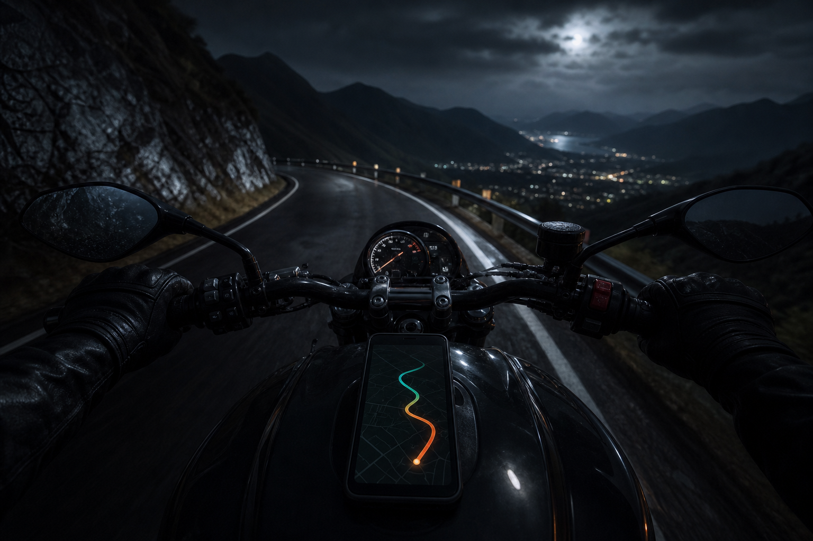
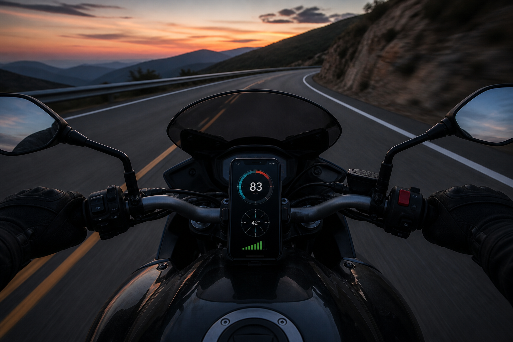
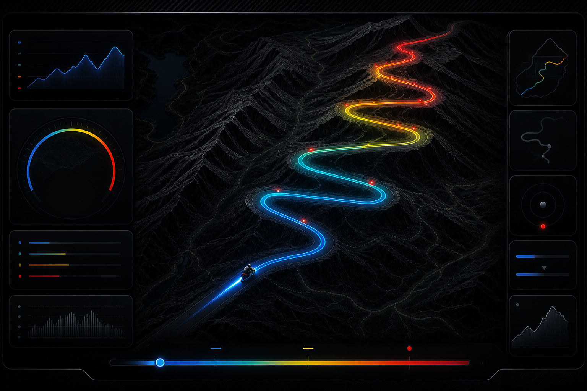
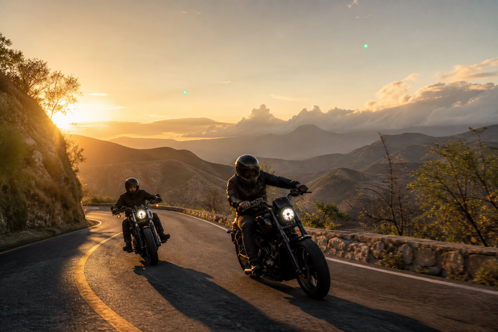
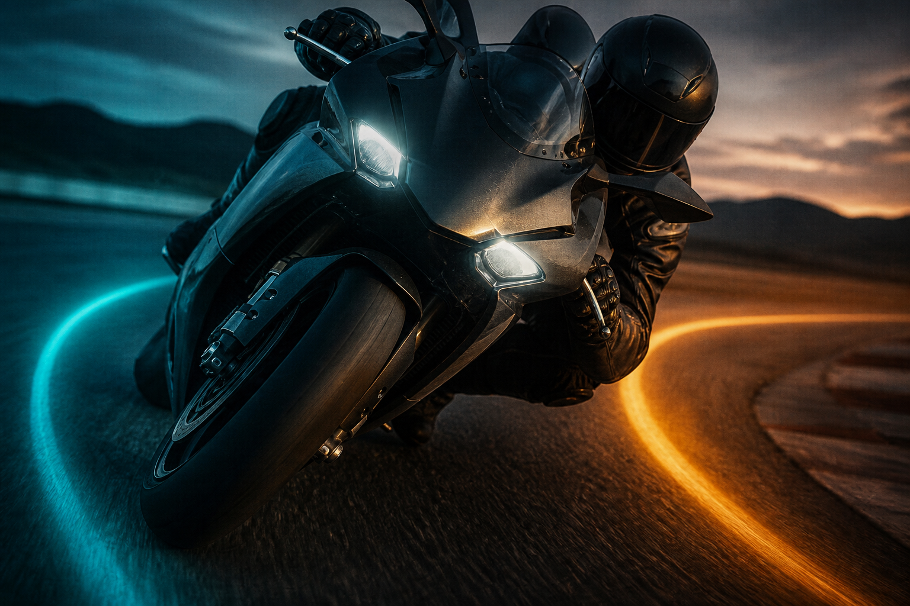

RiderLab · by RawThrottle · presentación corta
The street lab
for motorcycle riders.
Phone in the pocket or on the tank. We capture the line, the lean, and the group — then open it in Ride Lab after the ride.

The gap · el problema
Riders remember the feeling.
They lose the line.
- 1 Street riding is not a racetrack. No timing loops. No data logger.
- 2 After a canyon or a night ride, the group only has stories.
- 3 Coaches, clubs, and brands cannot see how a rider actually took the corner.
RiderLab puts a ride recorder + lab on the phone they already carry.
Capture · grabar
Start. Arm. Ride.
- GPS High-precision line, warm-up before you roll
- Lean Phone IMU — left / right gauge while you ride
- Baro Pressure when the phone has a sensor
- Auto Arm and it starts around 20 km/h — screen can lock
Offline-first on the phone. Cloud sync when the ride ends.

Ride Lab · el laboratorio
This is the product.

Map speed-colored line
Turns entry · apex · exit
Brakes inferred from speed
Charts scrub the playhead
Coach skill score + drills
Compare same stretch, a friend
Open any ride. Watch the line. Jump to a corner. See how a friend took the same piece of road.
Together · juntos
Friends and rodadas.
- ● Search riders. Request. Accept. Share a ride — only me, friends, or everyone.
- ● Create a rodada with an invite code. Meetup pin, RSVP, photos, short radio.
- ● Live dots are opt-in, about every 5 minutes — not a tracker.

Research · laboratorio de inclinación
Lean Lab is how we get honest.

A guided circuit at Bugambilias (Zapopan). Same road, both directions, pocket A/B — so we can train better lean, not guess it.
This is a pilot, not a finished “certified lean” product. Partners who care about data get a seat at that work.
Where we are · ahora
Live today. Honest about tomorrow.
Live
Android app
Sideload from GitHub. Spanish + English. Google account. Cloud garage.
Lab
Lean + camera
Bugambilias protocol, IMU bench, optional GoPro shutter. Off by default.
Next
Play + Pro
Free forever to record and ride together. 1 month of Pro on us; partners get 3 months with a personal code. Play checkout is next — not billed in the store yet.
Named routes and auto-lap exist in code and are paused. We do not demo them as live.
The ask · la conversación
Ride with us.
Then decide the partnership.
- 1 Sideload RiderLab. One canyon. One rodada. Open Ride Lab together.
- 2 Clubs, coaches, shops, camera brands, regional distributors — we want the right few, not everyone.
- 3 Full deck has every screen. This one is the shape of the product.
RawThrottle · RiderLab · Own every corner.